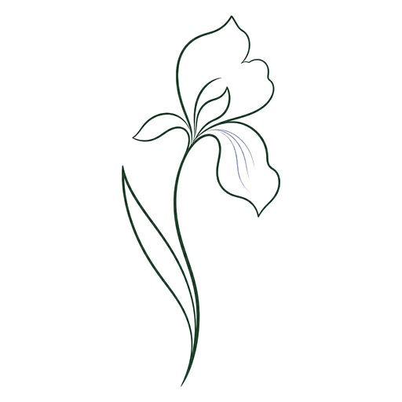

Iris / editorial HTML reportsThinking, made readable.
Iris turns AI analysis, research notes, codebase readings, product judgments, and technical explanations into refined single-page reports.
It is a report layer for serious AI-assisted work: typography-led, evidence-aware, portable HTML that helps readers see the thesis, inspect the proof, and understand what should happen next.
ThesisIris does not decorate raw output. It edits the material into a visible argument, then gives that argument a page with rhythm, evidence margins, diagrams, assumptions, and follow-through.
Two hand-authored reports are ready to browse.
These are the test reports now routed inside the Pages site. Their HTML content stays self-contained and unchanged, so they remain useful as both visual references and deployment smoke tests.
The template is structure, not a cage.
Iris starts by identifying the reader's decision context, the central judgment, the evidence path, and the remaining uncertainty. The final artifact is plain HTML with embedded CSS, ready to open, share, or deploy.
Accept notes, codebase findings, research clips, product critique, or rough AI output.
Separate observation, inference, judgment, and uncertainty before touching layout.
Use findings, margins, tables, and diagrams only when they clarify the reading.
No remote dependencies, no conversion pipeline, no decorative chrome.
Use Iris as a global skill.
The skill installs directly from the repository and gives supported agents the Iris report method, template reference, design guidance, and editorial constraints.
npx -y skills add iCyris/Iris --skill iris -a '*' -g -y